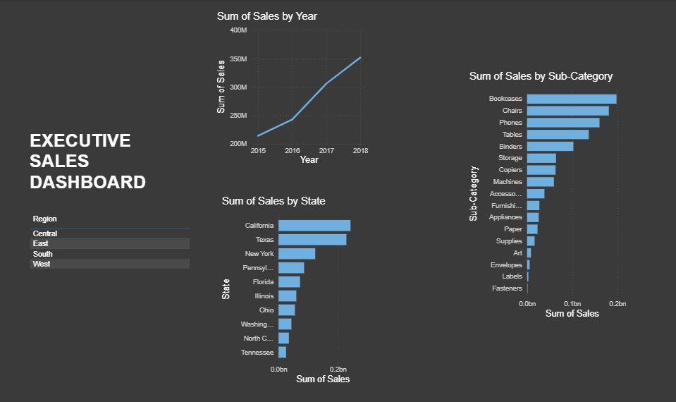

Data Analyst Project – Business Insights with Power BI

Turning Raw Data into Business Insights with Power BI
This project is a four-year retail sales analysis built with
Microsoft Power BI (the Superstore dataset), designed to answer key
business questions around sales trends and regional performance.
Process & Key Insights
-
Data Cleaning (ETL):
Used Power Query to standardize data types and ensure data accuracy.
-
DAX Measures:
Built custom calculations to track Total Sales dynamically
(reaching $2.3M).
-
Trend Analysis:
Leveraged drill-down features to identify seasonal patterns
from the yearly down to the monthly level.
-
Top Performer Analysis:
Identified the top 10 states by sales as a basis for resource
allocation strategy.
The dashboard was designed to be interactive, allowing users to
filter the data by Region to surface more specific and relevant insights.
← Back to Home